Z Image Turbo vs Qwen Image 2512 - Text to Image Comparison
Text-to-image generation has come a long way, with new models pushing the boundaries of what's possible in terms of prompt adherence, aesthetic quality, and generation speed. In this comparison, we pit two notable models against each other: Z Image Turbo and Qwen Image 2512. Z Image Turbo is known for its speed-optimized architecture while maintaining impressive visual fidelity, whereas Qwen Image 2512 brings the power of Qwen's multimodal understanding to image generation. We tested both models across 20 diverse prompts ranging from abstract art and anime styles to photorealistic portraits and complex scene compositions. The results speak for themselves - scroll through the comparison table below to see how each model interprets and renders these challenging prompts. All the prompts were taken from CivitAI.
| Prompt | Z Image Turbo | Qwen Image 2512 |
|---|---|---|
| #1 (masterpiece), best quality, abstract, abstract art, illustration, anime, black and gold, white and gold, ((red flower), simple background, white background), melting, detailed, cosmic print, constellations, cinematic, light particles, sci-fi, (space, fire, moon, water) | 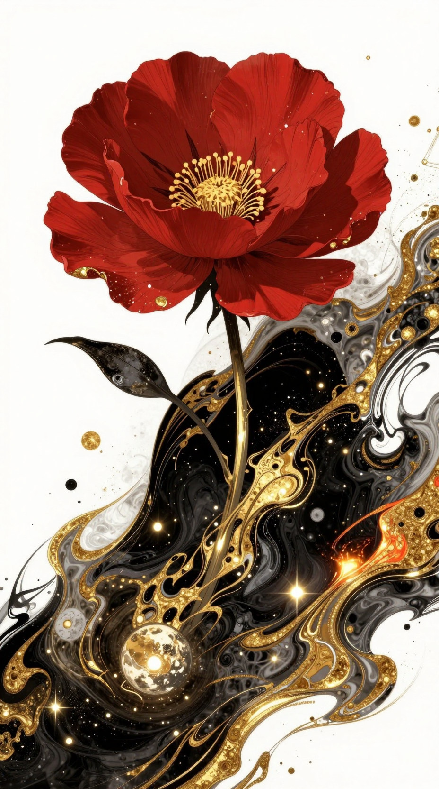 | 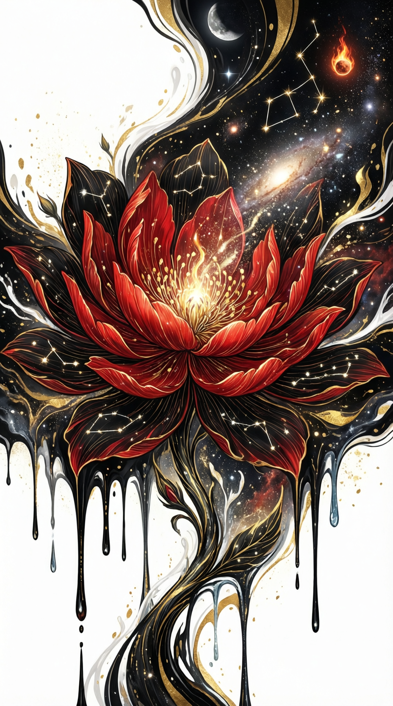 |
| #2 A vibrant, extreme neon-soaked scene captured in a dramatic Dutch angle, featuring a charismatic figure in a futuristic astronaut helmet with pink bunny ears. The black visor of the helmet displays a glowing cartoonish smile and two bright, abstract eyes represented by luminous crosses. The character strikes a dynamic combat pose, exuding confidence, with their semi-transparent energy rifles glowing in electric blue and pink, casually held upward, as if ready for action. They wear a rugged, flamboyant pink fur cape over sleek high-tech armor. Comets streak across a fiery cosmic backdrop filled with colorful nebulae, rocky debris, and distant planets. The surreal, chaotic energy of the setting amplifies the playful yet menacing aura of the bunny-eared warrior, standing at the center of an explosive galactic battlefield. | 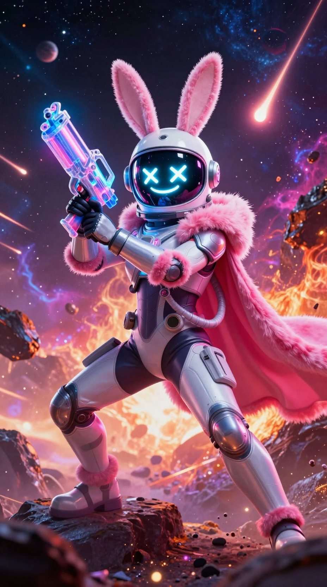 | 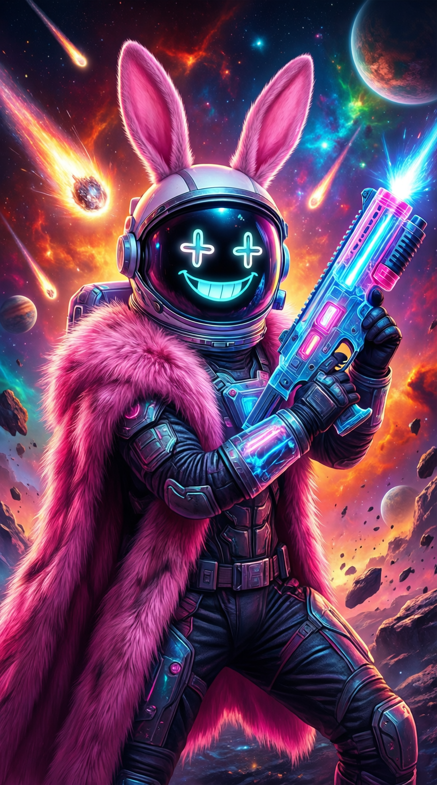 |
| #3 A macro-microscopic image of a thin kiwi slice submerged in water, showing dozens of minuscule air bubbles clinging to its surface. The slice is backlit, with light passing through the translucent green flesh and radiating black seeds. The focus is on fine cellular texture and bubble detail. Only a partial section of the slice is visible. Dark background. | 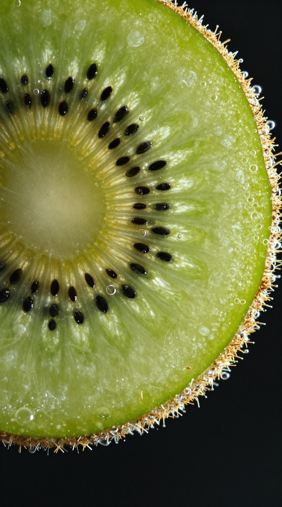 | 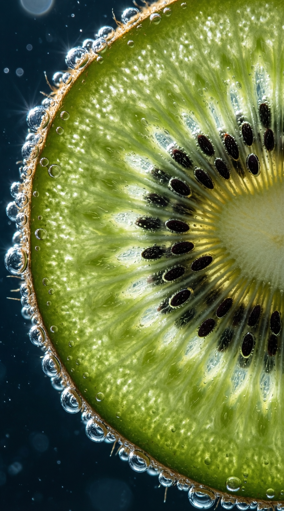 |
| #4 3l3ganc3, (watercolor art:1.1), scene of a woman sitting on metal steps in front of an apartment building, sunset, 1girl, solo, short orange hair, cropped white tank top, ruffled black mini skirt, pink mesh top, white pantyhose, sheer, high top sneakers, holding can of beer, BREAK, |

|
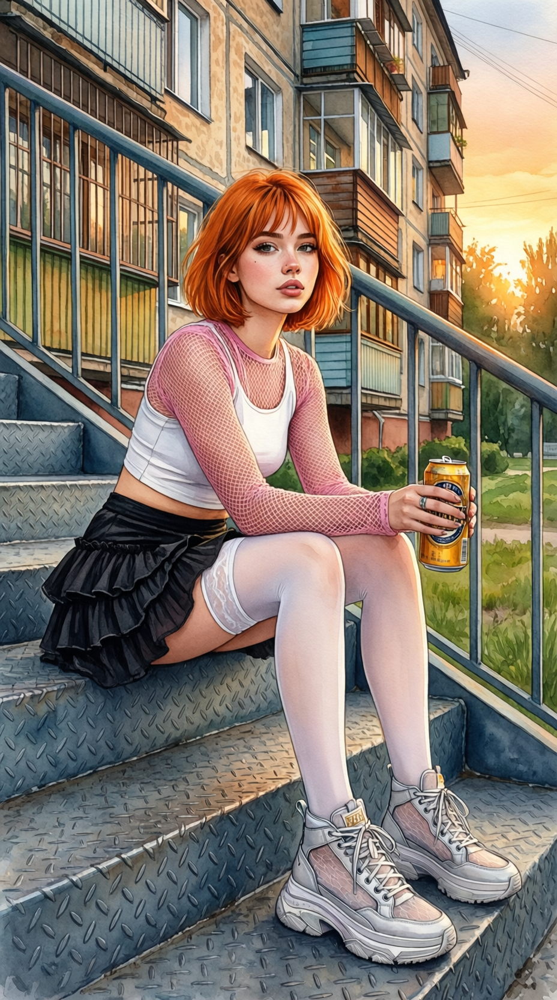 |
| #5 The girl is sitting on steps in front of a building. She is relaxed and bored. She looks up slightly, surveying the scene around her. Her posture is casual. A sense of calmness and loneliness is present despite the hustle from the city lights around her. Wide shot. |

|
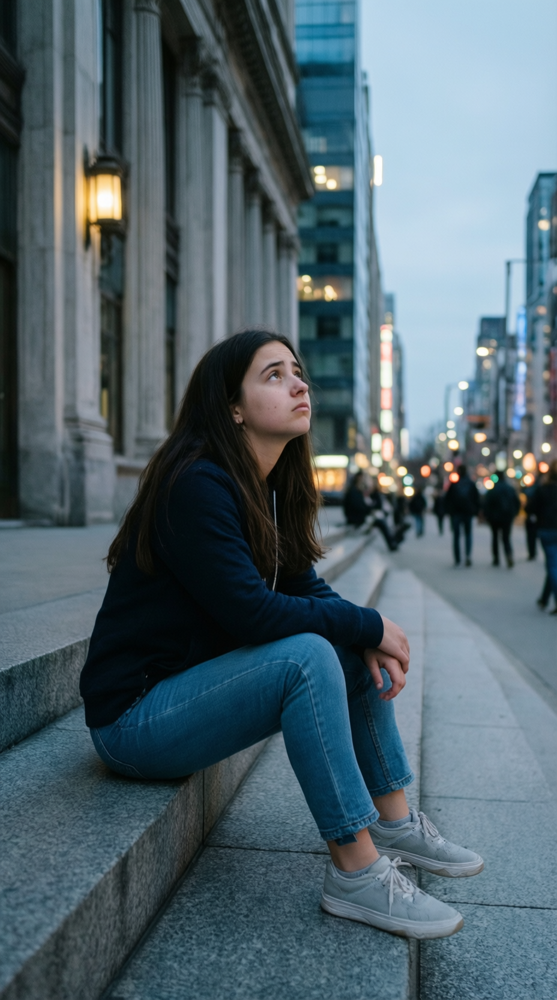 |
| #6 A hauntingly realistic, melancholic portrait of a European woman with white, cracked skin, resembling aged, fractured stone. Soft, glowing orange veins run delicately through the cracks like molten lava, creating a subtle, ethereal illumination. Her expression is enigmatic and slightly seductive, with parted lips and an intense, captivating gaze. One eye remains whole and alert, while the other is fragmented, adding a mysterious allure. Her long, flowing hair drapes softly over one shoulder, while the other side is shaved, emphasizing contrast. Nestled within a large, hollow opening in her cracked skull, a small European robin perches prominently, its vibrant red-orange breast and glowing head sharply contrasting against the shadowed recess. The bird is softly but vividly illuminated, its feathers catching the light and adding a striking, almost magical presence. The robin's alert, expressive eyes and detailed plumage create a strong focal point. The background fades into rich, deep shadows, with gentle, soft-focus lighting creating a surreal, painterly atmosphere. The image conveys the fragile beauty of imperfection, the interplay of decay and life, and a quiet, melancholic serenity. Highly detailed textures of cracked stone, flowing hair, and vivid feathers, with soft, dramatic light emphasizing depth, contrast, and ethereal beauty. | 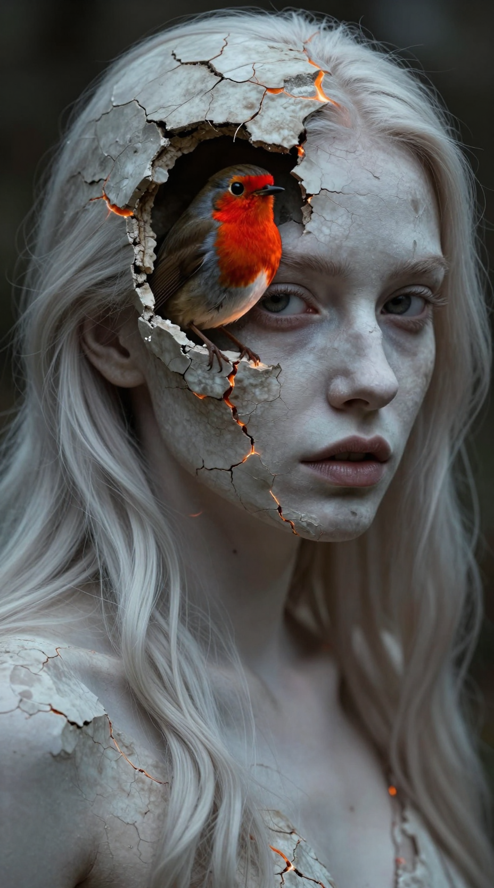 | 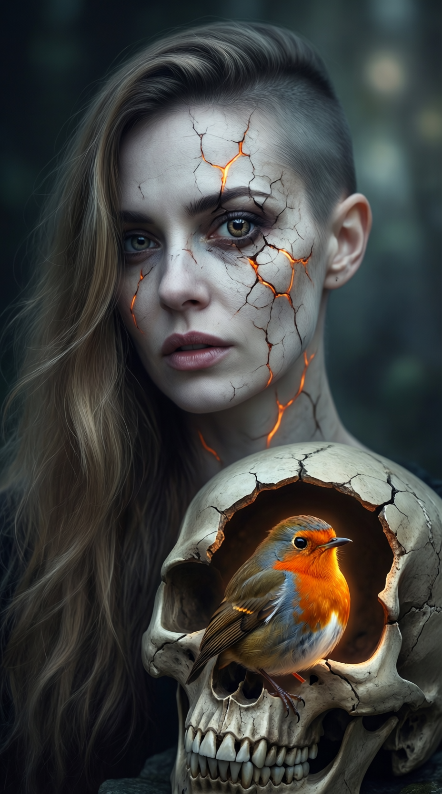 |
| #7 tenshi kaiwai,kawaii girl, soft pastel lighting,Live concert shot of a cute 20-year-old Japanese idol girl with short black bob and blunt bangs, wearing an oversized pastel baby-blue sailor-style t-shirt with glittery light-blue text and small cute motifs, huge elaborate white lace frilly headdress with veil, white lace fingerless gloves, white choker with silver heart pendant, holding a microphone close to her mouth with both hands, eyes half-closed in emotion, strong blue-white stage spotlight from the front and warm yellow spot from above, dark blurred crowd and raised hands in the background, dreamy bokeh, slight motion blur on hair, high contrast concert lighting, soft film grain, taken with Sony A7IV + 85mm f/1.4 wide open, photorealistic, emotional idol live atmosphere | 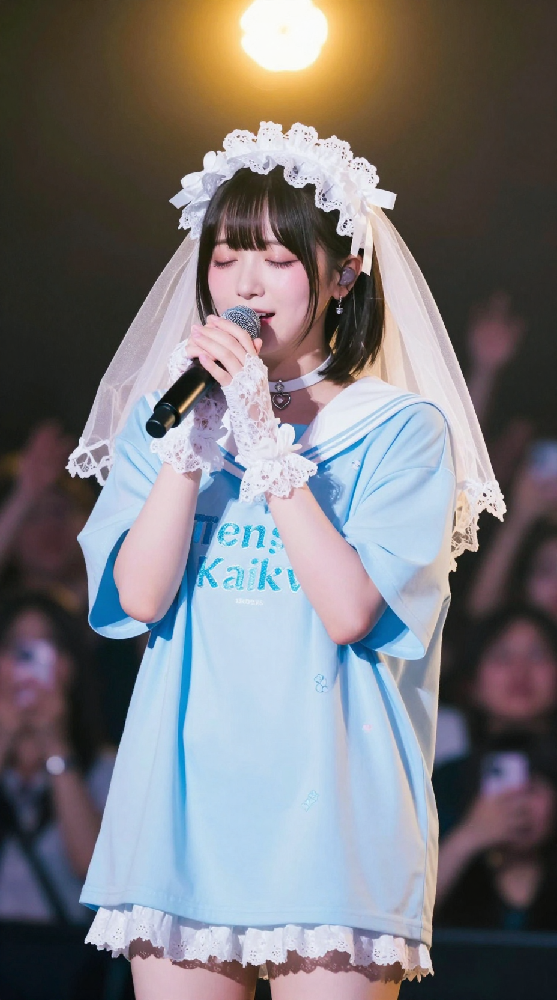 | 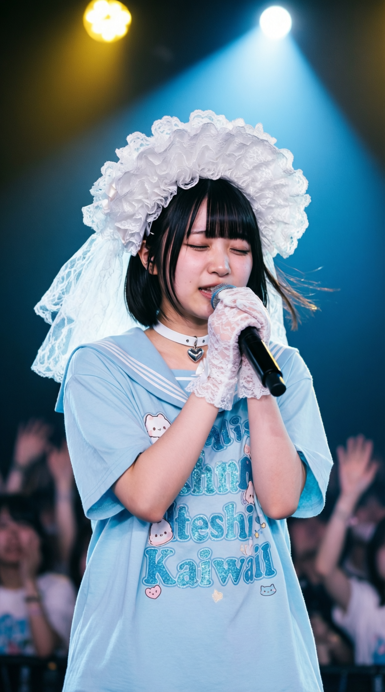 |
| #8 tenshi kaiwai,kawaii girl, soft pastel lighting,Cute 20-year-old Korean girl with straight black hair in low twintails, blunt bangs, pink star hair clip on the left, big sparkling eyes, small pout, doing the double paw pose (both hands up like cat paws next to face), wearing an oversized pastel mint turquoise tracksuit with white stripes and star patches on sleeves, the jacket has a large bold black metal font "tenshi kaiwai" printed across the chest with a tiny chibi angry skull underneath, light blue backpack, standing in the snacks aisle of a brightly lit Korean supermarket (yellow and red instant noodle boxes in background), colorful packaging, harsh fluorescent store lighting, playful and rebellious expression, ultra-sharp iPhone selfie style, realistic skin, vibrant colors, photorealistic - | 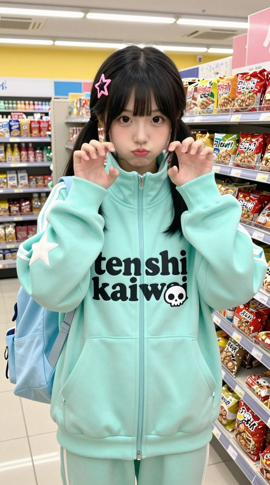 | 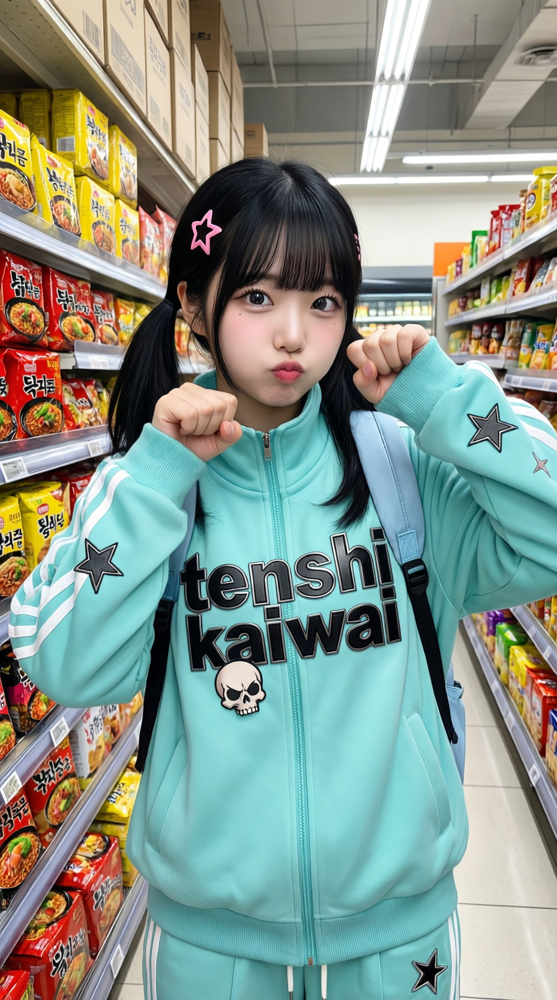 |
| #9 multiple cats, domestic cat, four cats, orange tabby cat, calico cat, black tabby cat, white tabby cat, striped kitten, on rooftop, sitting in a row, back view, tail hanging down, tail down,sunny day, soft shadows, warm lighting, vibrant colors, slice of life, serene_mood,bluesky, white clouds, urban rooftop, concrete wall, plants in foreground, tree, open air, peaceful afternoon, masterpiece, amazing quality, best quality, scenery, painterly, anime coloring | 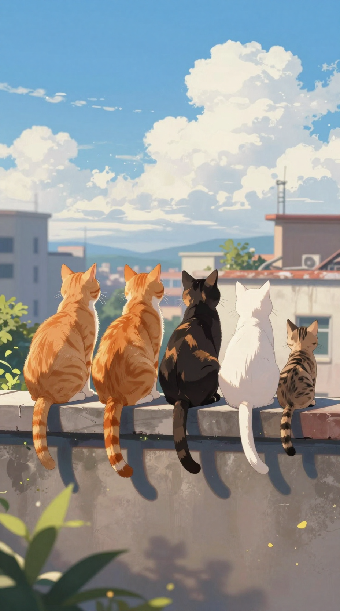 | 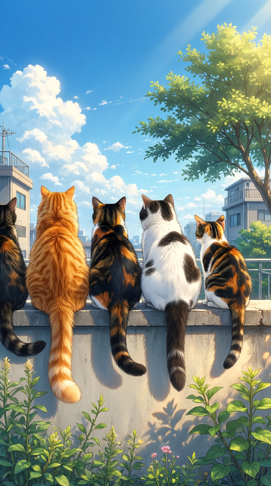 |
| #10 A realistic, 4k image of a An extraordinary photograph capturing a breathtaking landscape at dawn, featuring a majestic mountain range silhouetted against a vibrant sky painted in shades of orange, pink, and purple. The foreground showcases a serene lake reflecting the colorful sky and the surrounding lush greenery, with delicate mist hovering over the water's surface. Wildflowers in full bloom add splashes of color along the shoreline, while a lone eagle soars gracefully in the clear, crisp air above. The overall atmosphere evokes a sense of tranquility and awe, inviting viewers to immerse themselves in the beauty of nature (Indistinguishable from real:1.9) | 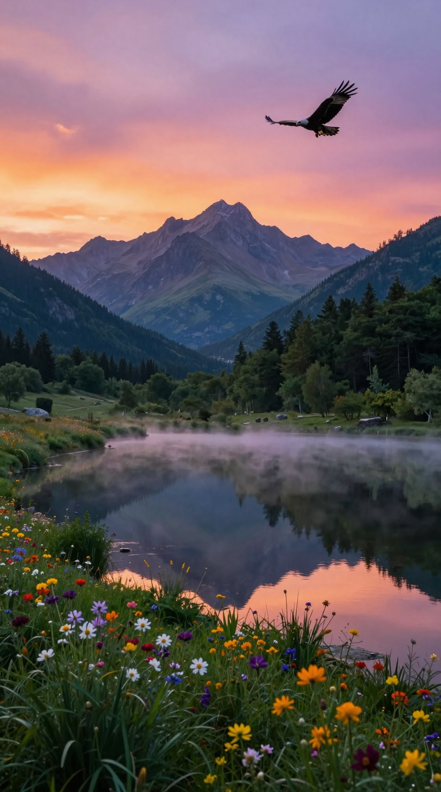 | 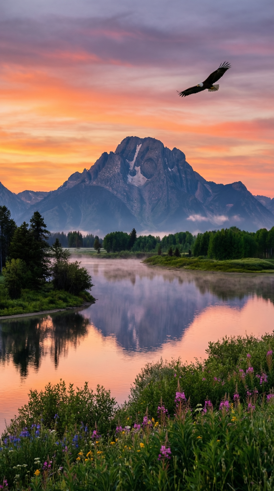 |
| #11 AlaMagna Style. A surreal double exposure masterpiece featuring the side profile silhouette of a mysterious figure wearing a heavy, textured hood that resembles weathered stone or coarse grey fabric. The interior of the silhouette blends seamlessly with a breathtaking forest landscape. Inside the figure's form, a winding river with cascading white waterfalls flows down through a dense grove of tall pine trees. Golden sunlight pierces through the misty forest canopy, creating a radiant, warm glow in the center where the face and neck would be, contrasting with the cool, dark greys of the outer hood. The bottom of the image sees the landscape and silhouette dripping and dissolving into the neutral, muted grey background. Cinematic lighting, ethereal atmosphere, highly detailed, photorealistic textures, mystical and moody concept art, 8k resolution. <lora:Alastar_ZIT_E10:0.7> | 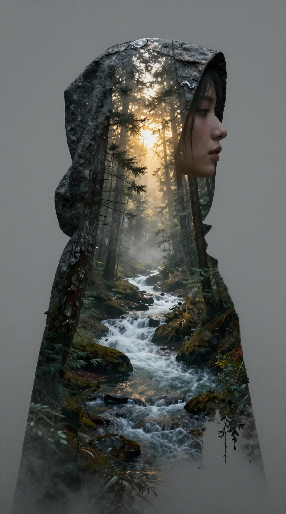 | 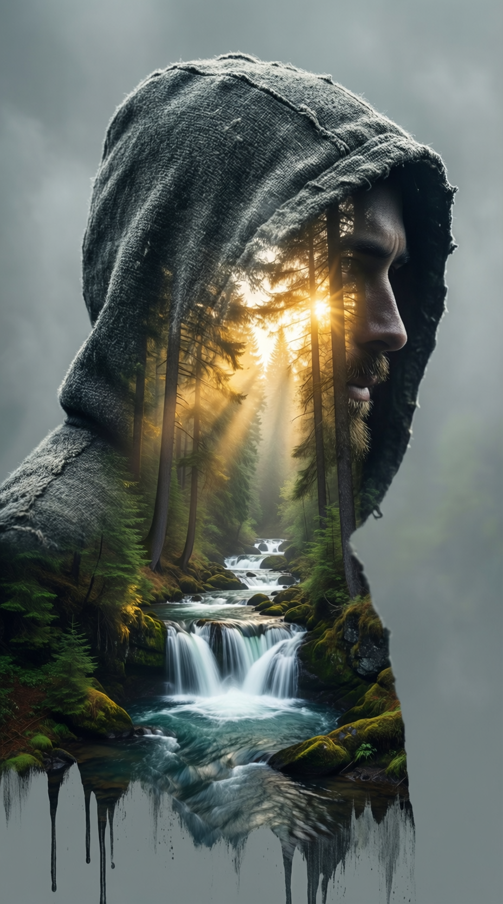 |
| #12 Highly detailed realistic oil painting, loose gestural strokes, drybursh accents. A young male figure seated on a white office chair, wearing a loose white t-shirt and tight black athletic shorts. Narrow shoulders, thin legs extended, bare feet on the floor. Soft window light from the left casts outlines. An abstract background with dappled tree shadows. Shallow depth of field, cinematic darkness, sharp highlights. <lora:Z_illustration_we_ne_v1:0.7> | 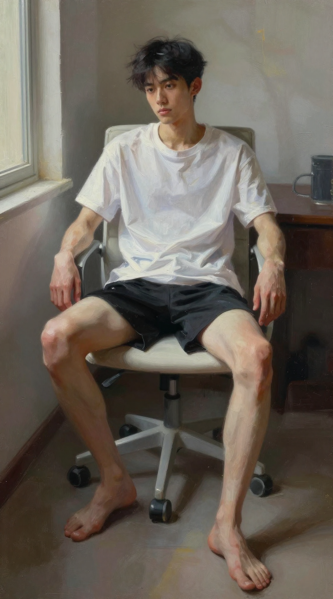 | 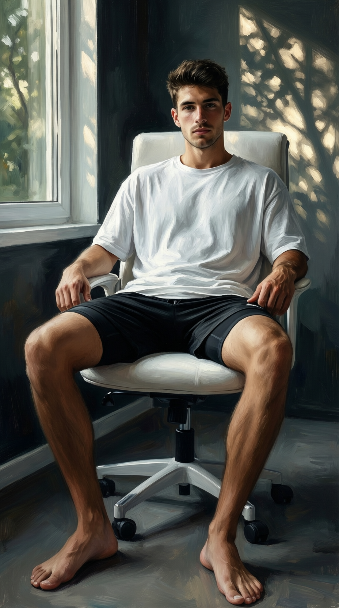 |
| #13 muse art style, powerful Black man in long black trench coat, intense expression as a supernatural hunter walking through dense swirling fog on rainy New York City street at night, dramatic low-key lighting with soft rim light highlighting sharp jawline and muscular build, neon signs and street lamps glowing in background through mist, cinematic chiaroscuro with deep shadows and subtle highlights on dark skin, moody atmospheric fine-art portrait, high detail professional photography, <lora:muse_art_zit_v12025-12-31_05-20-54-save-3499-3-625:0.8> | 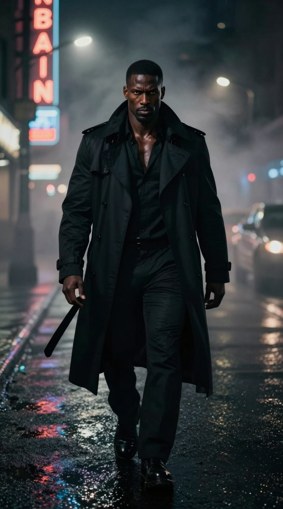 | 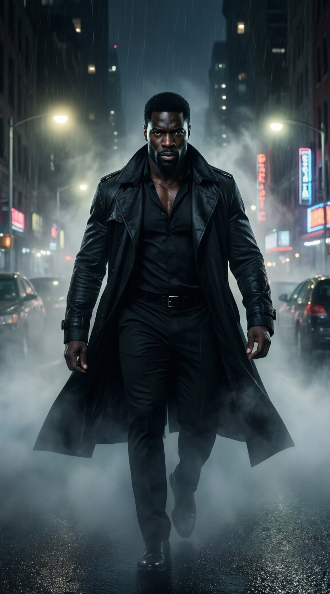 |
| #14 lunevacyber realistic photograph of Scene: An empty alley after rain; a solitary streetlamp, wet asphalt with puddles, a brick wall with a faded poster. Center frame stands a clown in a worn white tailcoat and gloves; heavy makeup, smeared red mouth, hard-drawn brows. In one hand—a long black balloon on a string (no text). | 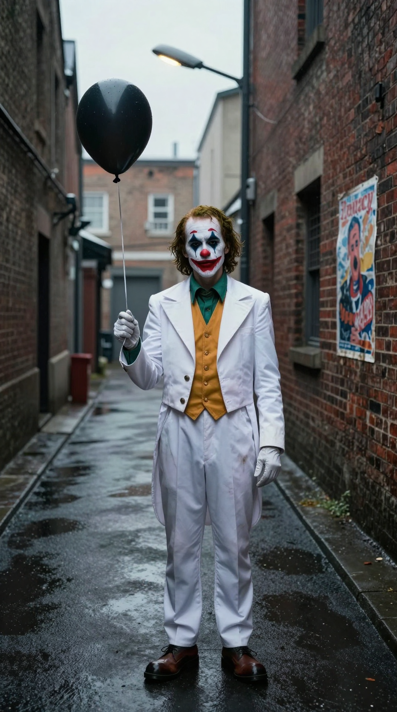 | 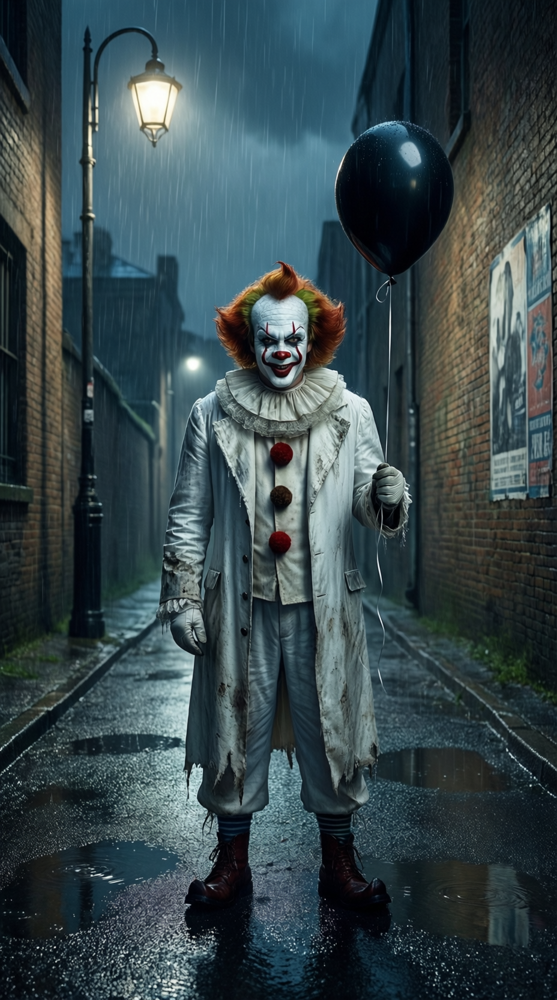 |
| #15 Light: Hard top key from the streetlamp creates a halo and deep eye-socket shadows; a cool back fill from deeper in the alley (bluish shop/neon spill) edges the shoulders and balloon; slight haze for volumetric beams; crisp puddle highlights. Camera Position: [low angle] [mid-shot]—camera almost on the ground, individual paving textures visible; subtle tilt 2–3° for unease; 50–85 mm so face/makeup read large while the background falls to soft bokeh. Object Placement: Clown on the left third, body 3/4 to camera, head slightly tilted; one arm hangs loose, the other holds the balloon string close to the lens, forming a strong diagonal; shoe tips point toward us. Atmosphere: A thriller film still—post-rain hush, distant city hum; the clown fixes the gaze—tension and hypnosis instead of loud theatrics.Exposure/Motion: 1/10–1/15 s with gentle camera drag + a hint of rear-curtain flash—eyes, mouth, and balloon hand tack-sharp while rain droplets and haze trace fine light trails. f/2.8–f/4, ISO 200. Effects/Tags: dramatic, blurredivision (soft halation on lamp/neon highlights), photoreal, ultra-detailed, high micro-contrast, optical refraction in puddles/droplets, natural skin (under makeup), film grain subtle, 4K PNG. photorealistic quality, professional cinematography, directional lighting with sharp dramatic shadows |

|
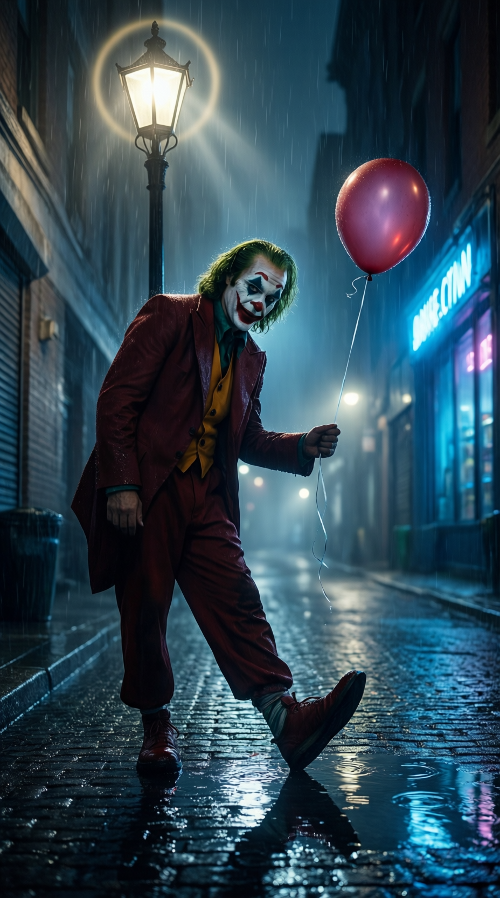 |
| #16 lunevacyber realistic photograph of masterpiece, ultra‐photorealistic, 8K, Vogue‐style street photography, front view an elemental woman shaped from storm, mist, ice, and breath, semi‐translucent skin with swirling frost patterns, soft vapor drifting from her form, subtle internal glow like frozen moonlight; walking down a city street, every step turning the pavement icy blue, frost blooming outward around her, normal warm‐colored street farther away for strong contrast; wearing an icy‐blue turtleneck sweater dress, long sleeves, shimmering like frozen wool; icy‐blue knee‐high boots with crystalline texture; holding a frosted coffee cup and a small ice‐blue purse; hair made of cold mist and pale blonde strands, flowing in loose waves as if moved by a gentle storm; warm smile formed from soft vapor, breath visible in the air; super realistic lighting, crisp highlights on ice textures, soft atmospheric mist around her, cinematic depth, high‐end fashion editorial mood. photorealistic quality, professional cinematography, directional lighting with sharp dramatic shadows | 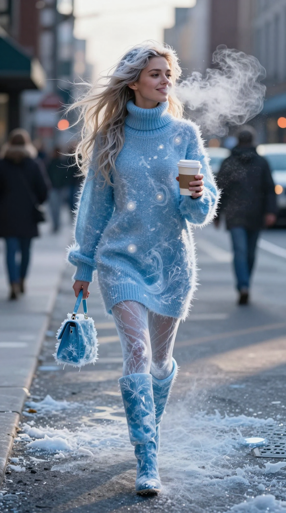 | 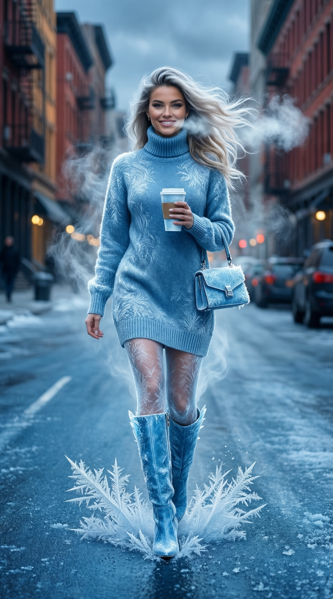 |
| #17 A confident saloon dancer moves through a dim wooden tavern, her body caught mid motion as she lifts the edge of her layered skirt. She wears a deep red corset with fine stitching and worn fabric, tightly laced and shaped by years of performance. Her hair flows in soft waves around her shoulders, catching warm lamplight that highlights her skin and subtle jewelry. Dust swirls gently around her legs and waist, glowing in the smoky amber light that fills the room. Wooden tables and stools fade into the background, softened by haze and drifting particles. The air feels warm, dry, and alive with quiet tension, balancing elegance, sensuality, and raw frontier grit. The scene carries a cinematic, tactile realism, grounded in texture, motion, and atmosphere, in a dustbound grit style. | 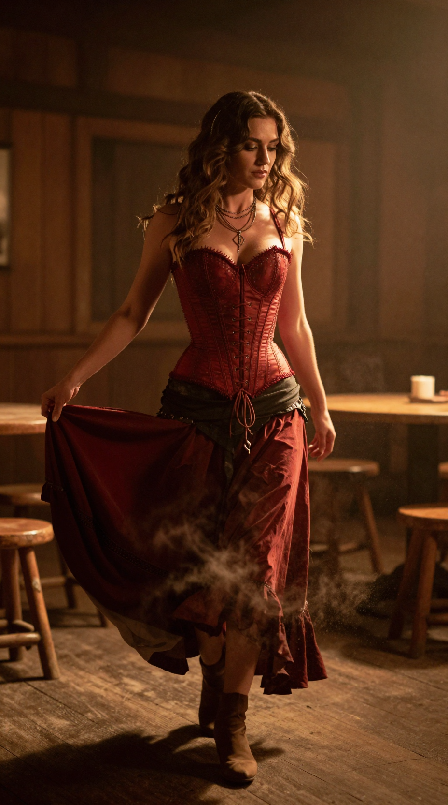 | 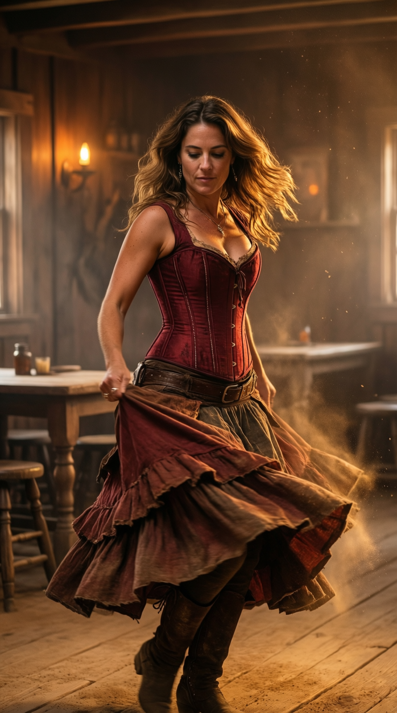 |
| #18 [same person every image, consistent facial identity,23-year-old female influencer named Sara,163 cm tall, light olive skin,long curly dark hair,hazel eyes,distinct facial structure:soft oval face, wide expressive eyes,straight nose with rounded tip,full lips, subtle asymmetry in smile, curvy body type,narrow waist, wide hips,full bust, feminine proportions,natural confident posture, do not change face or body] outfit:oversized t-shirt and shorts, hair style:messy hair, location: small apartment bathroom, activity: taking a mirror selfie, expression: relaxed and slightly tired,sleepy expression, unposed moment, candid lifestyle photography, handheld smartphone photo, shot on iPhone 15 Pro max, wide lens, f/1.8, computational photography, smart HDR, harsh overhead bathroom lighting, uneven shadows, imperfect exposure, slight overexposed highlights, subtle motion blur from hand movement, rolling shutter distortion, JPEG compression artifacts, minor chroma noise, Instagram upload quality, natural skin texture, visible pores, subtle blemishes, under-eye shadows, slight facial asymmetry, imperfect framing | 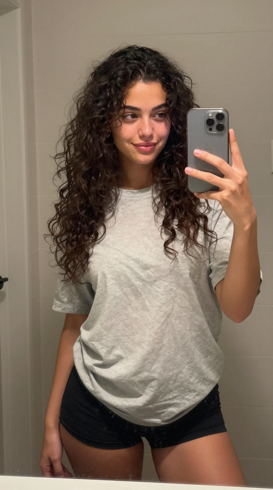 | 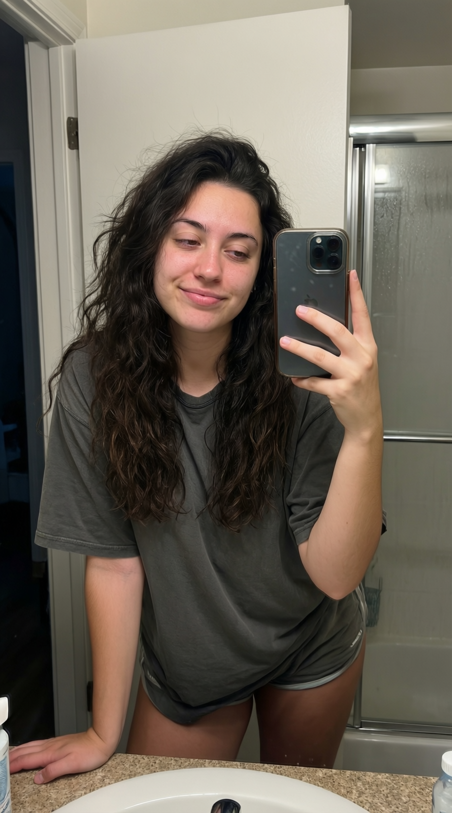 |
| #19 Horror-themed (extreme close shot of eyes :1.3) of nordic woman, (war face paint:1.2), mohawk blonde haircut wit thin braids, runes tattoos, sweat, (detailed dirty skin:1.3) shiny, (epic battleground backgroun :1.2), analog, haze, (lens blur :1.3), hard light, sharp focus on eyes, low saturation, by ilya kuvshinov and flora bosil, eerie, unsettling, dark, spooky, suspenseful, grim, highly detailed | 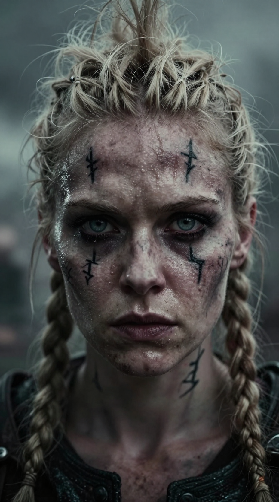 | 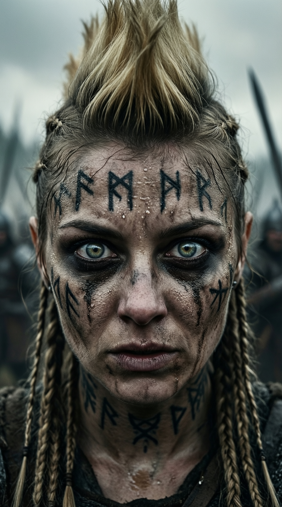 |
| #20 bo-golden, igh quality, ultra detailed, colorful, dark fantasy, a highly detailed, digital artwork depicting a fantastical, white snake coiled around a human figure, the snake's scales are intricately detailed, with a textured, almost porcelain-like texture, and its head is prominently displayed, showcasing sharp, pointed teeth and a serene expression, the human figure's face is not visible, but its eyes are a vivid red, adding a striking contrast to the otherworldly nature of the snake, the background features a blurred, ethereal scene with soft, muted colors, suggesting a tranquil, otherworldly environment, the tree branches are adorned with delicate, pink cherry blossom flowers, which add a touch of warmth and beauty to the scene, the overall composition is balanced, with the snake and human figure occupying the central focus, while the cherry blossoms provide a subtle, natural backdrop, enhancing the serene and mystical atmosphere of the artwork |

|
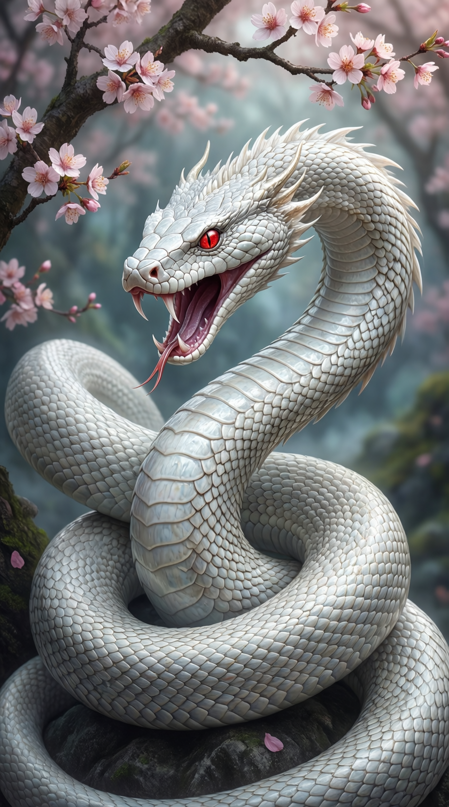 |
Notes
Both models were tested with default settings. LoRA tags in prompts were kept as-is to test how each model handles unknown tokens. Results may vary with different seeds and sampling parameters.